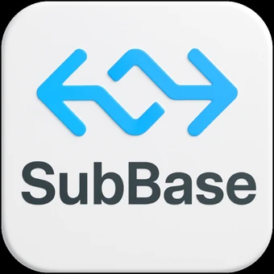

Importer zamówień
Pobieranie danych zamówień z BaseLinker, podgląd i kontrola duplikatów, przekazywanie zamówień do Subiekt GT oraz obsługa powiązanych dokumentów sprzedaży.

SubBase/ DokumentacjaKontakt ↗Aplikacja desktopowa do obsługi procesów sprzedaży internetowej — od zamówień i dokumentów sprzedaży po zwroty oraz monitorowanie ocen produktów.
Dokumentacja produktu obejmuje funkcje aplikacji, sposób przetwarzania danych, integracje z systemami zewnętrznymi oraz zasady instalacji i bezpieczeństwa. Dostępność wybranych modułów zależy od wariantu instalacji.
Pobieranie danych zamówień z BaseLinker, podgląd i kontrola duplikatów, przekazywanie zamówień do Subiekt GT oraz obsługa powiązanych dokumentów sprzedaży.
Obsługa procesu zwrotów, kontrola statusów i powiązanie danych ze zwrotów z operacjami realizowanymi w BaseLinker i Subiekt GT.
Lokalna ewidencja produktów, pobieranie informacji z integracji oraz kalkulacja cen jednostkowych netto.
Obsługa i synchronizacja dokumentów związanych z zamówieniami, w tym faktur i paragonów, w ramach połączenia z Subiekt GT.
Odczyt statystyk ocen produktów powiązanych z ofertami, historia zmian i opcjonalne powiadomienia. Moduł jest obecnie dostępny w wersji wewnętrznej.
Cykliczne wykonywanie wybranych operacji importu i synchronizacji, z kontrolą przebiegu oraz rejestrowaniem wyników.
Importer przenosi zamówienia z BaseLinker do Subiekta GT. Proces jest podzielony na pobranie danych, przygotowanie planu importu, wykonanie operacji w systemie sprzedażowym oraz zapis wyniku.
Produkty mogą być wyszukiwane na podstawie identyfikatora BaseLinker, SKU lub EAN, zgodnie z wybranym trybem dopasowania. Osobne mechanizmy mapują dostawę i płatność na dane Subiekta GT. Dla kontrahentów stosowane są skonfigurowane reguły wyszukiwania i obsługi brakujących kartotek, w tym wyszukiwanie po NIP.
Importer obsługuje także pojedyncze zamówienie oraz pracę według harmonogramu. Automatyczne wykonanie korzysta z kontroli poprawności i zabezpieczeń przed ponownym utworzeniem dokumentu.
Identyfikator zamówienia pochodzący ze źródła zewnętrznego jest wykorzystywany do wykrywania ponownego importu. Podgląd oddziela zamówienia gotowe od pozycji wymagających działania operatora, a historia pozwala odróżnić samo przygotowanie podglądu od faktycznego utworzenia dokumentu. Wariant ręczny i harmonogram korzystają z tych samych zasad weryfikacji.
Returns Manager łączy informacje o zwrotach z BaseLinker z dokumentami sprzedaży przechowywanymi w Subiekcie GT. Przed utworzeniem dokumentu zwrotu wykonywana jest analiza danych źródłowych.
Powiązanie zwrotu z dokumentem źródłowym uwzględnia paragony (PA), faktury sprzedaży (FS) oraz powiązane ścieżki dokumentowe. Mechanizm sprawdza istniejące dokumenty zwrotów i korekt, w tym ZW i KFS. Niejednoznaczne lub brakujące powiązania wymagają wyjaśnienia zamiast automatycznego wyboru przypadkowego dokumentu.
Decyzje dotyczące fizycznego przyjęcia towaru na stan magazynowy są osobnym obszarem konfiguracji rozwijanym w projekcie; nie należy utożsamiać samego zgłoszenia zwrotu z automatycznym przyjęciem produktu.
Przygotowanie zwrotu obejmuje identyfikację dokumentu sprzedaży (PA lub FS), dopasowanie produktów i sprawdzenie, czy istnieje już dokument zwrotu bądź korekty. W razie brakujących lub niejednoznacznych powiązań pozycja jest blokowana do wyjaśnienia. Bezpośrednio przed zapisem wykonywana jest ponowna kontrola istniejących dokumentów.
Przyjęcie zwracanego towaru na stan magazynowy jest odrębną decyzją biznesową — nie wynika automatycznie z samej rejestracji zgłoszenia w systemie.
Moduł dokumentów końcowych obsługuje dalsze czynności po utworzeniu ZK: wystawienie odpowiedniego dokumentu sprzedaży, kontrolę gotowości do wystawienia i weryfikację dokumentów już istniejących.
Ścieżka dokumentowa uwzględnia różne warianty faktur, paragonów oraz powiązań między nimi. Aplikacja przechowuje wyniki operacji, obsługuje ponowienie wybranych czynności i pozwala wykonywać synchronizację zgodnie z konfiguracją harmonogramu. Operacje dokumentowe w Subiekcie GT korzystają z Sfery.
SubBase jest lokalną aplikacją Windows napisaną w C# na platformie .NET 8 z interfejsem Avalonia UI. Wykorzystuje lokalne pliki konfiguracyjne i bazę SQLite. Integracje sieciowe komunikują się z zewnętrznymi API przez HTTPS, a połączenie z Subiekt GT odbywa się przez Sfera (COM, środowisko 32-bitowe).
Monitor ocen produktów korzysta z osobnego połączenia z Allegro REST API, niezależnie od integracji BaseLinker i Subiekt GT.
BaseLinker jest źródłem danych operacyjnych wykorzystywanych przez moduły zamówień, zwrotów i produktów. Integracja korzysta z API BaseLinker i skonfigurowanego klucza dostępu.
Importer zamówień odczytuje dane klienta, pozycje, płatności i dostawę potrzebne do przygotowania dokumentów w Subiekcie. Returns Manager pobiera zgłoszone zwroty wraz z informacjami wykorzystywanymi podczas identyfikacji dokumentu źródłowego. Funkcje produktów pozwalają pobierać informacje o kartotekach i wykorzystywać je w lokalnej ewidencji.
Przed operacjami zapisującymi aplikacja tworzy plan działania i sprawdza warunki wykonania. Historie operacji umożliwiają weryfikację rezultatów oraz rozpoznawanie już obsłużonych zamówień i zwrotów. Harmonogramy pozwalają automatyzować wybrane procesy bez konieczności ręcznego uruchamiania każdej operacji.
SubBase wykonuje żądania do interfejsu BaseLinker API przy użyciu tokenu skonfigurowanego dla danej instalacji. Metoda API i parametry operacji są przekazywane w żądaniu HTTPS; odpowiedzi JSON są mapowane na wewnętrzne modele zamówień, produktów i zwrotów.
| Przykładowa operacja API | Rola w aplikacji |
|---|---|
getOrders | Odczyt szczegółów zamówień, pozycji, klienta, płatności i dostawy dla importera oraz dopasowywania danych. |
getOrderSources | Pobranie źródeł zamówień wykorzystywanych podczas filtrowania listy. |
getOrderReturns i getOrderReturnStatusList | Odczyt zgłoszonych zwrotów i dostępnych statusów Returns Managera. |
getInventories i getInventoryProductsList | Odczyt magazynów i list produktów na potrzeby modułów produktowych. |
Dane BaseLinker nie są kopiowane bezpośrednio do dokumentów księgowo-magazynowych. SubBase normalizuje pola wejściowe, rozwiązuje identyfikatory produktów oraz warunki płatności i dostawy, weryfikuje duplikaty i dopiero po spełnieniu warunków uruchamia operację w Subiekcie GT. Status wykonania oraz diagnostyka są zapisywane w aplikacji.
Integracja z Subiektem GT odpowiada za operacje dokumentowe oraz dostęp do kartotek w systemie sprzedażowo-magazynowym. Wykorzystuje Sferę dla Subiekta GT — interfejs automatyzacji COM pracujący w środowisku Windows x86.
Funkcje zależne od Sfery wymagają lokalnego środowiska Subiekta GT, odpowiednich uprawnień operatora oraz poprawnej konfiguracji połączenia z bazą podmiotu. Procesy importowania i obsługi zwrotów przechodzą etap weryfikacji przed wykonaniem operacji dokumentowych.
Operacje są realizowane na lokalnym stanowisku Windows przy użyciu komponentów Sfery. Przed zapisem SubBase wyszukuje istniejące kartoteki i dokumenty, ustala właściwy typ czynności (ZK, dokument sprzedaży, zwrot lub korekta), a następnie odczytuje wynik wykonania. Problemy z połączeniem COM, uprawnieniami operatora lub brakującymi danymi są prezentowane w raportach operacji.
Monitor opinii odczytuje zbiorcze statystyki ocen produktów przypisanych do ofert sprzedawcy: średnią ocenę, liczbę ocen i rozkład gwiazdek. Aplikacja porównuje kolejne pomiary, zapisuje historię i wykrywa zmiany. Nie pobiera treści pojedynczych recenzji ani nie publikuje odpowiedzi na opinie. Obecnie integracja służy obsłudze własnego konta Allegro; w przyszłości planowane jest udostępnienie jej także innym użytkownikom z indywidualną autoryzacją kont.
Integracja umożliwia połączenie własnego konta Allegro, pobieranie aktywnych ofert, odczyt agregatów ocen produktów oraz porównywanie kolejnych pomiarów. Zdarzenia mogą wywoływać alerty w aplikacji lub opcjonalne powiadomienia Discord. Wszystkie operacje na zasobach ofert i ocen mają charakter odczytowy — monitor nie zmienia ofert, zamówień ani ocen sprzedawcy.
SubBase realizuje Authorization Code Flow z PKCE (S256). Na czas połączenia generuje parametr state i parę code_verifier / code_challenge. Użytkownik loguje się w serwisie Allegro i zatwierdza dostęp w przeglądarce. Kod autoryzacyjny trafia na lokalny adres zwrotny http://localhost:51234/allegro/callback, po czym następuje wymiana kodu na tokeny OAuth. Ponowne żądania korzystają z tokenu Bearer; po wygaśnięciu tokenu dostępowego aplikacja korzysta z refresh tokenu. Uwierzytelnianie nie wymaga podawania hasła do Allegro w SubBase.
SubBase obecnie nie dołącza jawnego parametru scope do żądania autoryzacji. W takim przypadku Allegro stosuje zakresy skonfigurowane dla zarejestrowanej aplikacji OAuth. Tabela poniżej przedstawia uprawnienia potrzebne do działania Monitora Opinii; rzeczywisty zakres dostępu zależy od konfiguracji klienta OAuth. Dynamic Client Registration (DCR) jest planowanym sposobem udostępniania integracji w osobnych instalacjach SubBase, lecz nie jest jeszcze wdrożony.
| Żądanie | Przeznaczenie |
|---|---|
GET /sale/offers | Odczyt aktywnych ofert sprzedawcy z paginacją (publication.status=ACTIVE), w tym identyfikatorów ofert i danych niezbędnych do przypisania ocen do produktów. |
GET /sale/offers/{offerId}/rating | Główne źródło agregatów ocen produktu przypisanego do oferty: averageScore, totalResponses, scoreDistribution. |
GET /sale/products/{productId} | Uzupełniający odczyt informacji i statystyk produktu, jeśli pobranie ocen przez ofertę nie zakończy się poprawnie. |
GET /me | Odczyt podstawowych danych połączonego konta w celu potwierdzenia autoryzacji. |
GET /sale/offers/{offerId} | Pomocniczy odczyt danych oferty, m.in. nazwy i powiązania z produktem. Integracja nadal korzysta tutaj ze starszej ścieżki API, której oficjalnym odpowiednikiem jest GET /sale/product-offers/{offerId}. Zmiana tej ścieżki w aplikacji jest przewidziana podczas modernizacji integracji. |
Komunikacja z API służąca monitorowaniu ma charakter odczytowy: żądania GET korzystają z tokenu Bearer i nagłówka Accept odpowiadającego wersji zasobu. Otrzymane statystyki są przetwarzane lokalnie. Moduł nie zmienia ofert, nie obsługuje transakcji i nie wykonuje operacji finansowych na koncie Allegro.
Monitor ocen produktów wymaga dostępu do odczytu ofert sprzedawcy. Dodatkowy odczyt profilu służy wyłącznie do identyfikacji konta i testu połączenia. Moduł nie potrzebuje uprawnień do edycji ofert, zamówień, płatności ani ocen sprzedawcy.
| Scope | Funkcja | Zakres dostępu i uzasadnienie |
|---|---|---|
allegro:api:sale:offers:readWymagany | Monitorowanie ocen produktów | Odczyt listy ofert (GET /sale/offers), agregatów ocen (GET /sale/offers/{offerId}/rating) oraz powiązanych danych produktów (GET /sale/products/{productId}). Uprawnienie nie pozwala modułowi na modyfikowanie ofert. |
allegro:api:profile:readDla identyfikacji konta | Weryfikacja połączenia | Odczyt informacji identyfikujących połączone konto (GET /me), umożliwiający operatorowi sprawdzenie, czy autoryzował prawidłowe konto. Nie jest wymagany do samego odczytu ocen produktów. |
Na potrzeby modułu przetwarzane są identyfikator oraz nazwa oferty, powiązanie z produktem i agregaty ocen (averageScore, totalResponses, scoreDistribution). Dane służą do obliczania różnic między pomiarami, filtrowania wyników i wykrywania spadków ocen. SubBase nie pobiera za pośrednictwem monitora historii płatności ani danych dostaw i nie wysyła zmian do zasobów ofertowych Allegro.
SubBase zapisuje monitorowane oferty i kolejne pomiary na stanowisku użytkownika. Zestaw historii przechowuje do 50 ostatnich pomiarów na ofertę. Na ich podstawie realizuje zestawienia, historię zmian i alerty. Włączenie powiadomień Discord powoduje przekazywanie przygotowanych komunikatów na webhook skonfigurowany przez operatora; bez aktywacji tej funkcji zewnętrzne powiadomienia nie są wysyłane.
Specyfikacje i dokumentacja: Allegro OAuth i DCR · Oceny produktów · Lista endpointów REST API.
Komunikacja z Allegro i BaseLinker odbywa się z wykorzystaniem HTTPS. Autoryzacja Allegro następuje w przeglądarce serwisu, bez wprowadzania hasła do konta Allegro w aplikacji.
Tokeny OAuth Monitora Ocen są zapisywane w konfiguracji w postaci chronionej przy użyciu Windows Data Protection API (ProtectedData, zakres CurrentUser), co wiąże odszyfrowywanie z kontem użytkownika Windows. Dane operacyjne aplikacji są przechowywane lokalnie, w tym w bazie SQLite i plikach konfiguracyjnych użytkownika.
Właściciel instalacji odpowiada za zabezpieczenie dostępu do konta Windows, kopie zapasowe i ochronę stanowiska. Klucze API, tokeny oraz sekrety nie są publikowane w tej dokumentacji.
SubBase jest dystrybuowany jako aplikacja dla Windows x86 z instalatorem oraz wariantem przenośnym. Aktualizator może sprawdzać nowe wydania, pobierać instalator z repozytorium wydań, kontrolować integralność SHA-256 i uruchamiać instalację po potwierdzeniu użytkownika.
Wydania beta są obecnie udostępniane w prywatnym repozytorium; publiczna dokumentacja nie oznacza publicznego dostępu do instalatorów ani kodu źródłowego.
Instalacja Windows wykorzystuje pakiet Inno Setup i aplikację x86. Mechanizm aktualizacji może sam sprawdzać dostępność nowej wersji, pokazać postęp pobierania i przeprowadzić instalację po akceptacji użytkownika. Dane użytkownika są przechowywane oddzielnie od plików programu.
E-mail: oskar.wiktorowicz2703@gmail.com
Kontakt w sprawach działania aplikacji, integracji i bezpieczeństwa danych odbywa się za pośrednictwem wskazanego adresu.